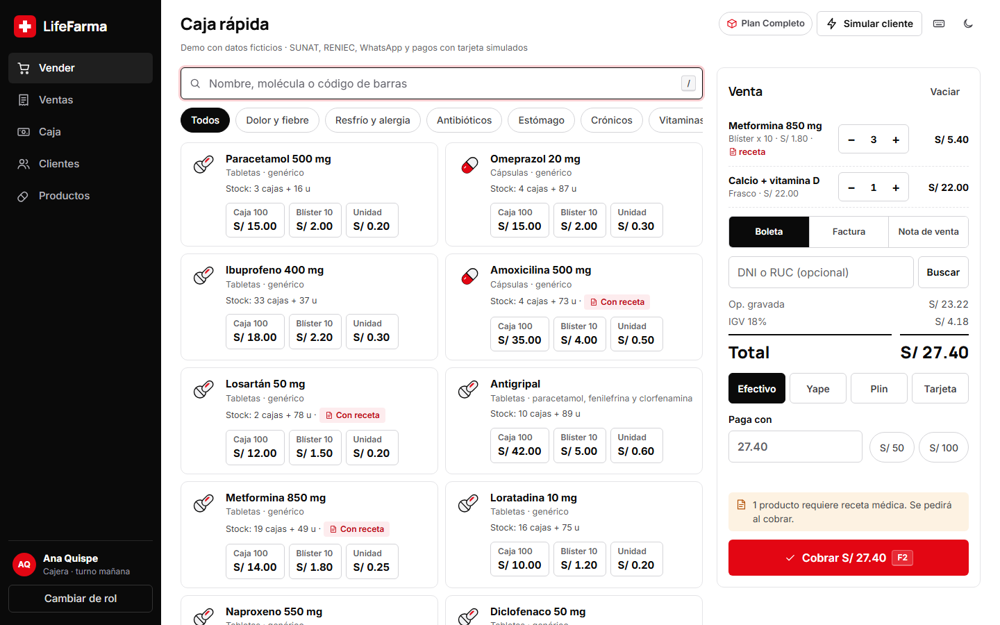
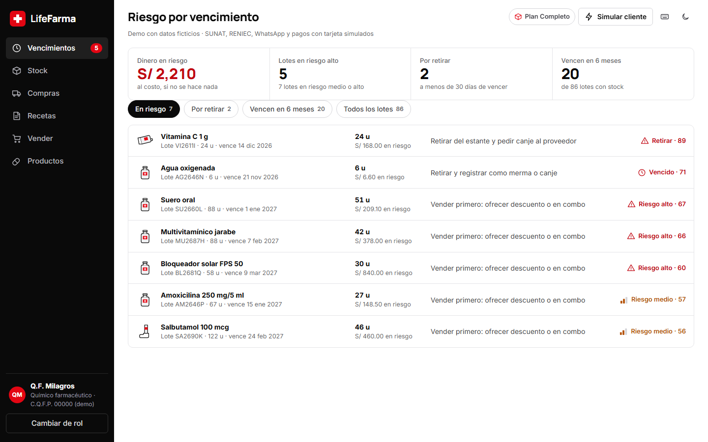
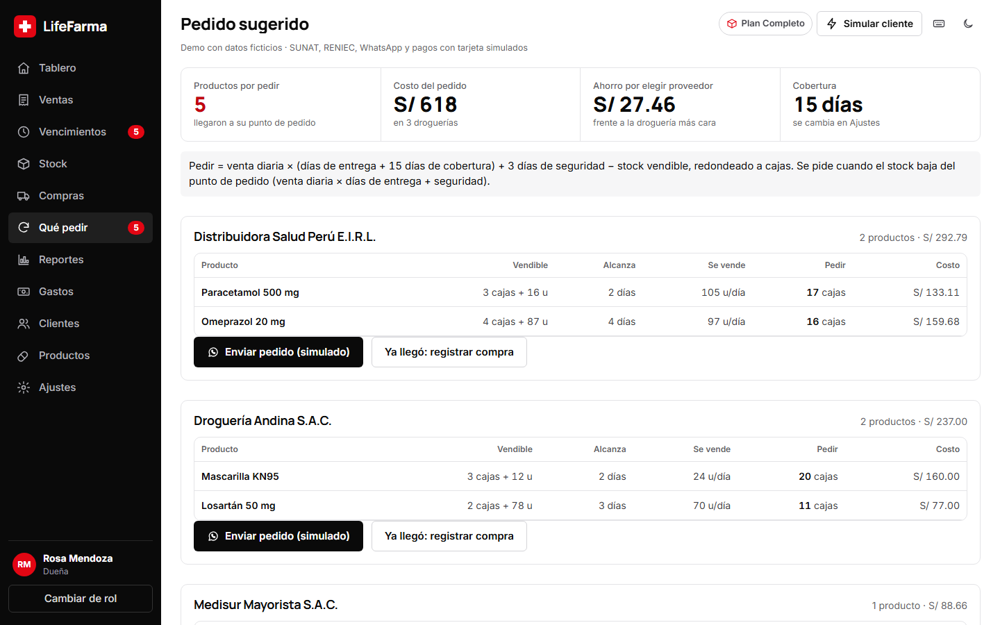
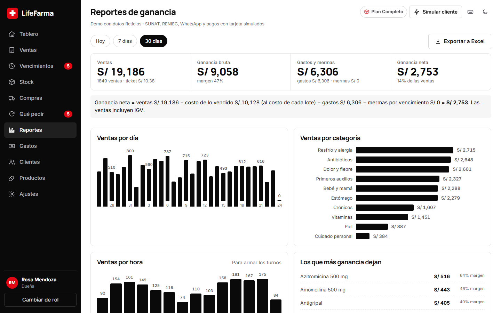

Deje de botar plata en productos vencidos.
LifeFarma es el sistema para boticas y farmacias en Perú. Vende por caja, blíster o unidad, emite boletas y facturas, y cada lote tiene un puntaje que avisa cuántas unidades no se venderán antes de vencer, cuánto dinero es y qué hacer.
Demo con datos ficticios de una botica inventada. No necesita registrarse.
En una botica, la ganancia se va por donde nadie mira.
- El jarabe se vence en el estante porque se compró de más, y nadie lo notó hasta que ya no se podía canjear.
- El stock no cuadra: se vende por blíster y por unidad, y al final del mes faltan pastillas que nadie sabe dónde quedaron.
- Las recetas se anotan en un cuaderno, si se anotan, y los antibióticos salen sin registro.
- No se sabe cuánto queda de verdad después de pagar a la droguería, el alquiler y los sueldos.
Cómo funciona un día con LifeFarma
Capturas reales del sistema de demostración.




Tres planes, o arme el suyo
Cada plan se puede probar completo ahora mismo. La cotización depende de sus cajas y usuarios, por eso la conversamos por WhatsApp.
¿Cuánto se le vence al año?
Calculadora de estimación. Cambie los valores por los de su botica.
Qué es real y qué es simulado en este demo
- Real: la venta por presentación con descuento por lote (FEFO), el IGV, el vuelto, la receta obligatoria, el puntaje por vencimiento, el pedido sugerido, la caja con arqueo, el kardex, los reportes y la exportación a Excel.
- Simulado: el envío de boletas y facturas a SUNAT, la consulta de DNI en RENIEC y de RUC en SUNAT, el cobro con tarjeta y el envío de pedidos por WhatsApp.
- Ficticio: la botica LifeFarma, su químico farmacéutico, clientes, médicos, droguerías, DNI, RUC y teléfonos. Los datos viven solo en su navegador y se regeneran cada día.
¿Quiere verlo con los productos de su botica?
Le mostramos el sistema en una llamada de 15 minutos y cargamos su catálogo y sus precios.
Escribir por WhatsApp